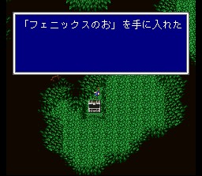

타이쿤 운석
오프닝. 바람의 힘이 약해지는 것을 느끼는 타이쿤왕이 바람의 신전으로 떠나고, 가라프가 운석을 타고 오면서 이야기는 시작됩니다.
게임을 시작하면 주인공은 초코보를 타고 여행중. 타이쿤의 운석에 도착하면(여기밖에
갈 데가 없습니다) 한 소녀를 고블린들이 끌고 가는 것을 목격하고, 전투가 일어납니다.
발로 해도 이길 수 있는 전투.. 이기면 소녀는 자신을 레나라고 소개하고, 주인공의
이름을 정하게 됩니다. (여기서는 스퀘어 설정대로 밧슈로 합니다.) 그녀는 바람의
신전으로 가보아야 한다고 하는데.. 운석 뒤를 보면 가라프를 만납니다. 그는 자신의
이름 이외에는 기억이 없으나, 레나의 목적지를 듣고는 자신도 가야 한다면서 따라나섭니다.
가기 전에 잠깐, 오른쪽 아래 숨겨진 길을 잘 뒤지면 피닉스의 꼬리깃이 나옵니다.

밧슈는 여행을 계속하는데, 북쪽으로 여행하다 보면 지진이 일어나고, 레나와 가라프가 고블린에 의해 위험해 처해 있는 것을 보고 그들을 돕습니다. (두 번의 전투가 일어나는데, 역시 발로 해도 이깁니다.) 그들을 구하고 나면 밧슈는 바람의 신전으로 동행하기로 하고, 레나와 가라프가 동료가 됩니다.